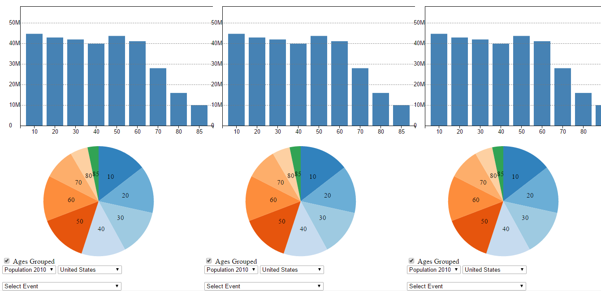
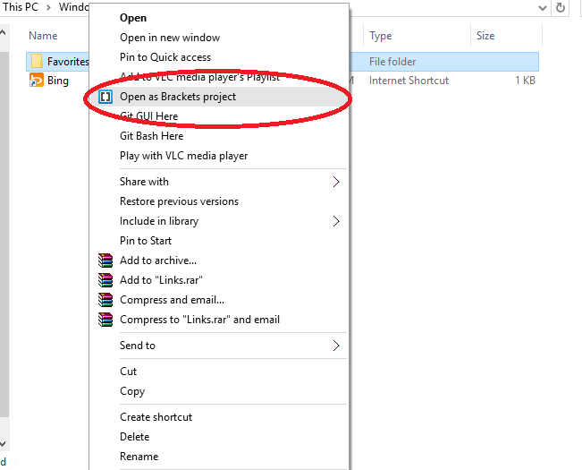
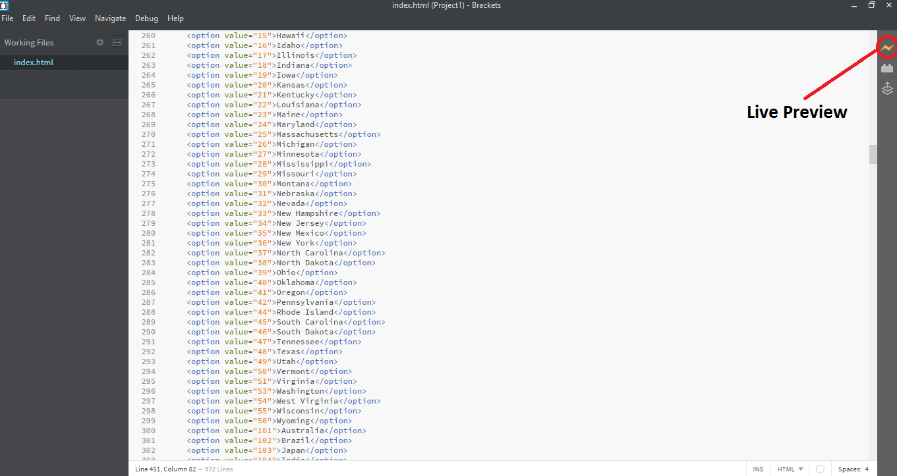

A la Carte
spelt /ɑː lɑː ˈkɑːt; in French means selecting what you want from a list of items according to the menue. In this application you can chose from 10 different events across 6 different countries and from 86 age groups, and visualize the data in three independent columns of a webpage.
How to Use
Using A la Carte is easy and simple, the page has three vertical sections and each section has independent controls to choose the "Population Year" ,"State or Country" and an event from a list of 10 different events, when you select an event the charts highlight the population that remember the particular event.

Elections in India 2014
Farmer Year Australia 2012- Year declared as year for farmers, more of government resources towards agriculture
World War II Japan 1945
9/11 Disaster United States 2001
Wiki Leaks Diamonds of Zimbabwe 2008- Marange Diamonds smuggled by corrupt government officials
Rio Olympics Brazil 2016
North American Winter Storm 2014
Obama Care 2010
Candy Crush Saga 2013
Economic Obsession US 2011
Topping: You can group or degroup the population according to age ranges "0-10","10-20" etc
Installation
Step 1: Download the code as zip from GitHub
Step 2: Download appropriate version of Brackets and install
Brackets is an open source code editor and NOT a malware
Step 3: Extract the Zip file downloaded from GitHub
Step 4: Right click on the extracted folder and selct Open as Brackets Project

Step 5: In the Brackets editor click on the Live Preview button on the top right

Step 6: Play Around
Data Used
United States Age Wise & Year Wise Population DataAustralia,India,Brazil,Japan & Zimbabwe Age Wise & Year Wise Population Data
The data used is NOT RAW data obtained from the sources mentioned. The data fields that were used for the application consists of State Name:"Alabama, Alaska, etc" Age:"0,1,2,3...,85" and Population in the years 2010 to 2014 against the ages. Other data like "Sex","Region",etc are discarded.
Key Findings
Data is Beautiful
Video
Here is the video